About Me

I was born on November 29, 2003, in Valladolid, Philippines. There are 5
in my family and I am the youngest of three children. The oldest is my
sister, Hazel, then my brother, Matthew, and me. My family and I immigrated
to America in December of 2004. However, my brother and I had to move back to
Philippines for a year and a half because my dad got deployed in Iraq. It was
difficult for my mom to take care of three little kids on her own in a foreign
country, so that's why my brother and I went back and stayed with my grandma
until my dad came back. I was raised in Baltimore, Maryland, where we spent most
of our life in America.
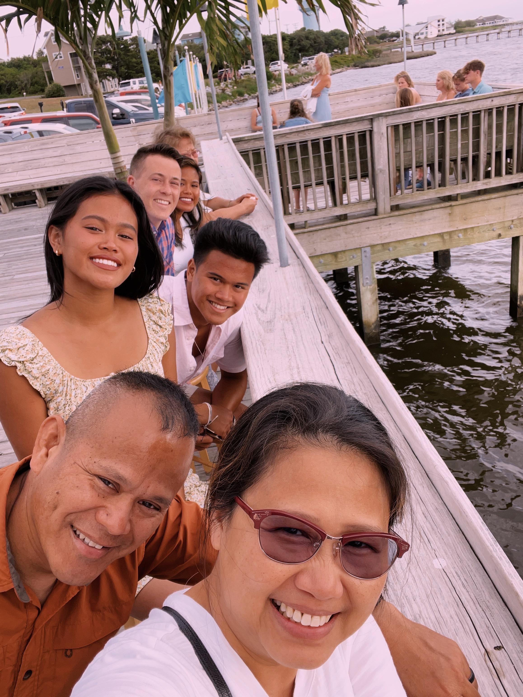
My Family
 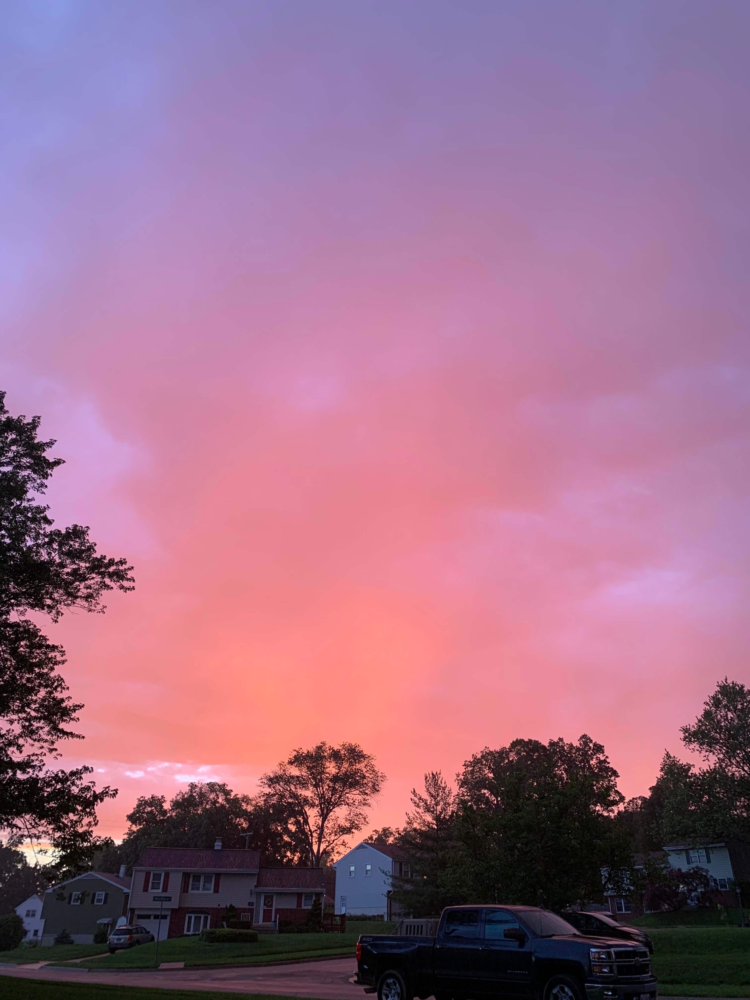
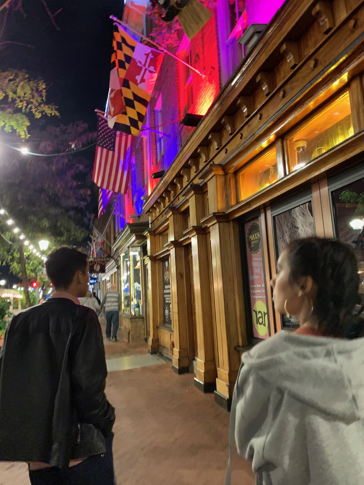
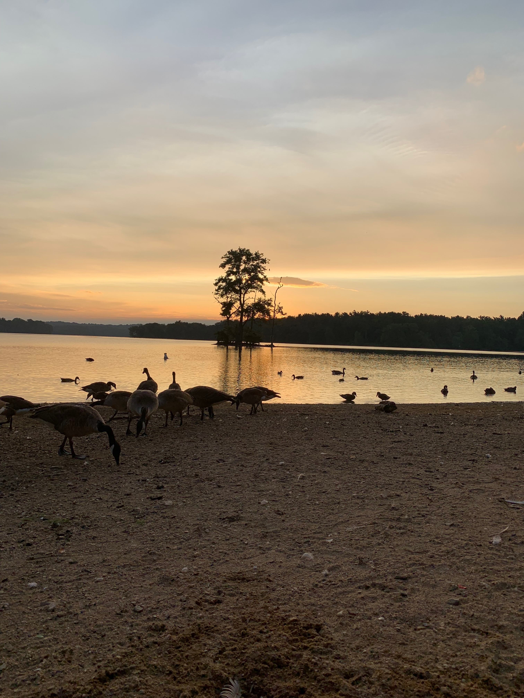
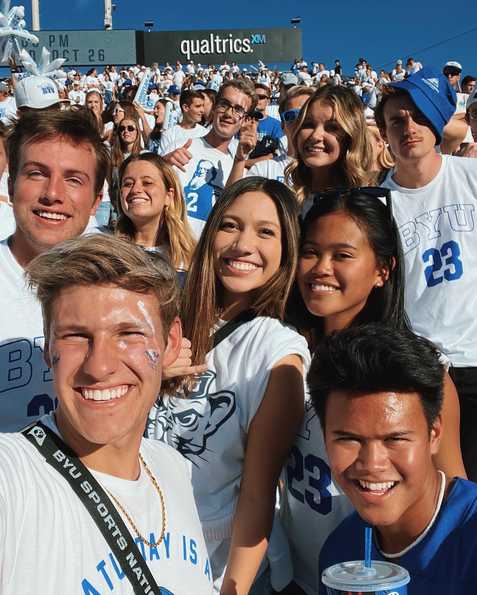
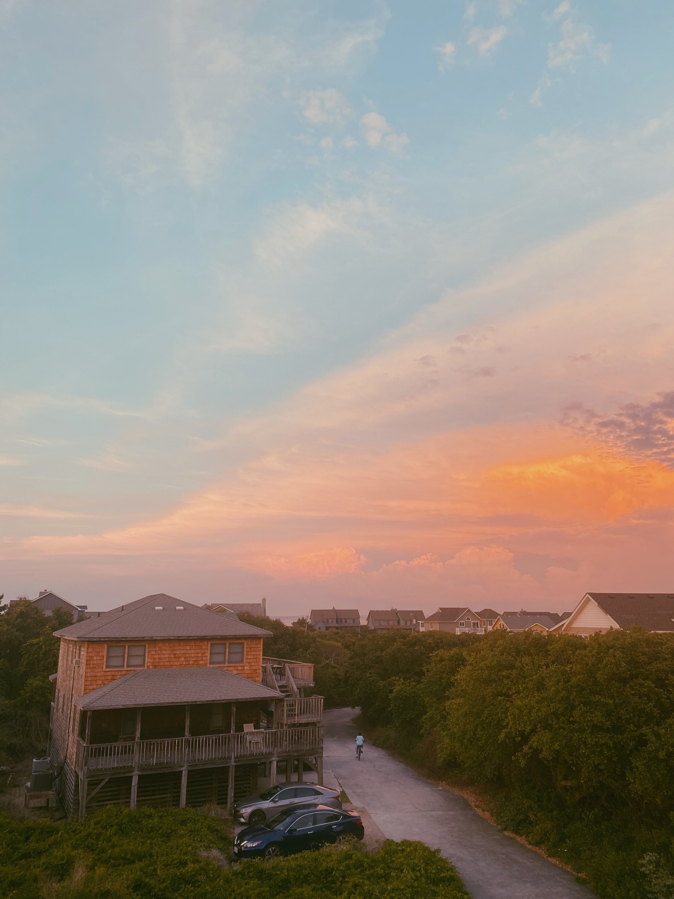
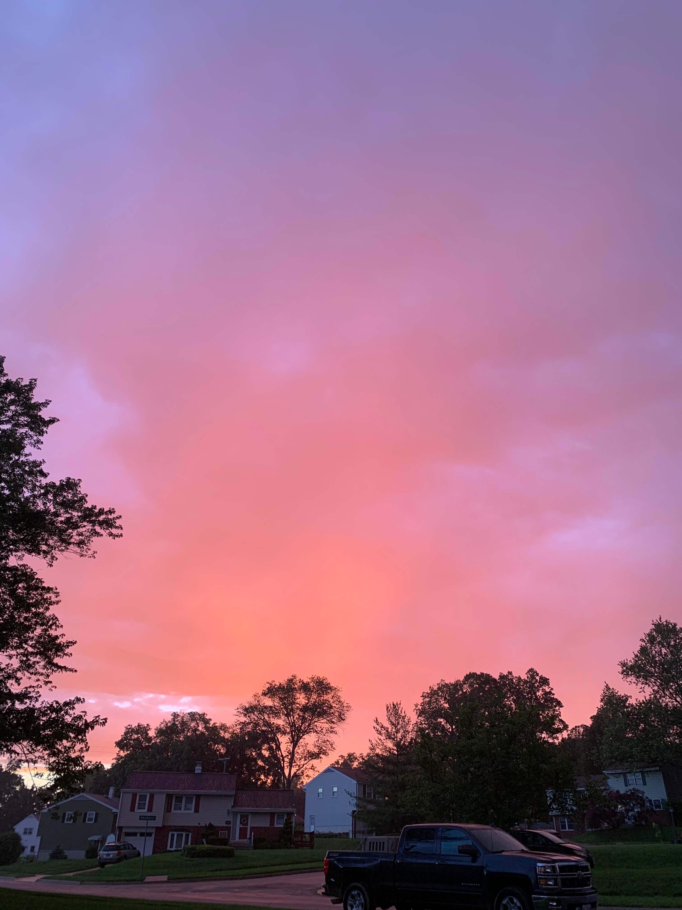
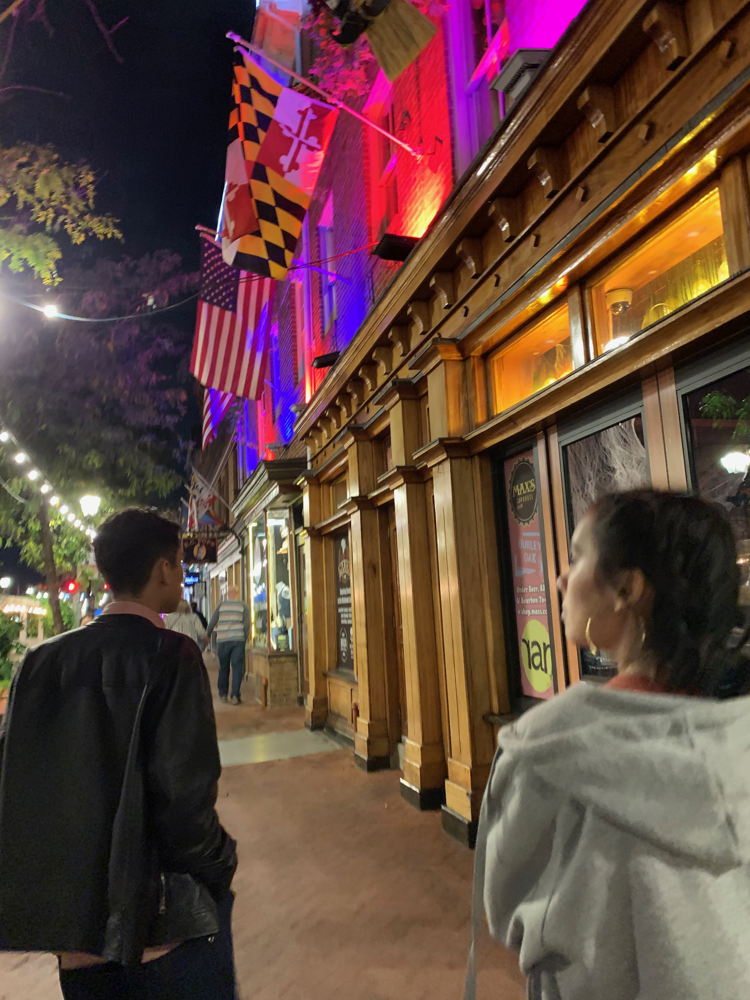
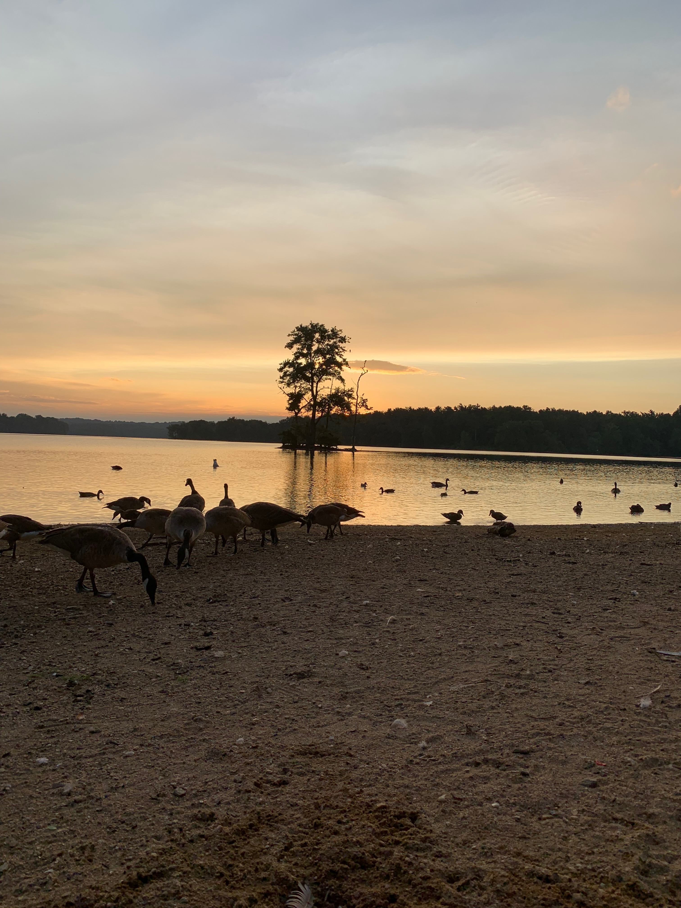
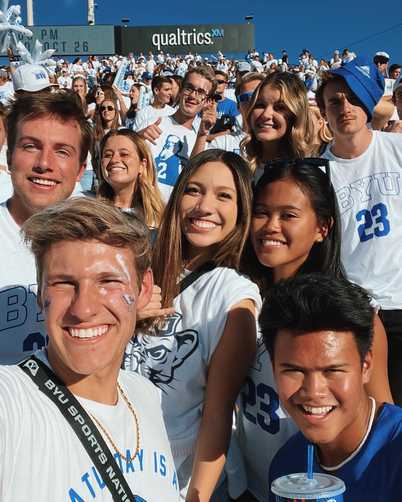
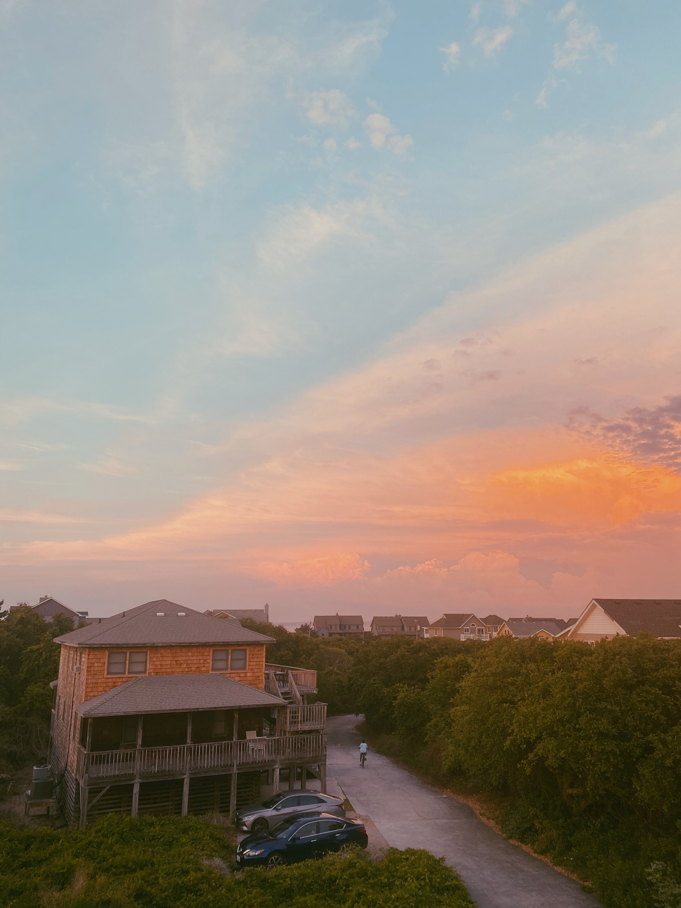
This video is my inspiration. I aspire to create memories like this when I travel with friends to different countries. I want to be able to capture beautiful moments like these during my adventures.